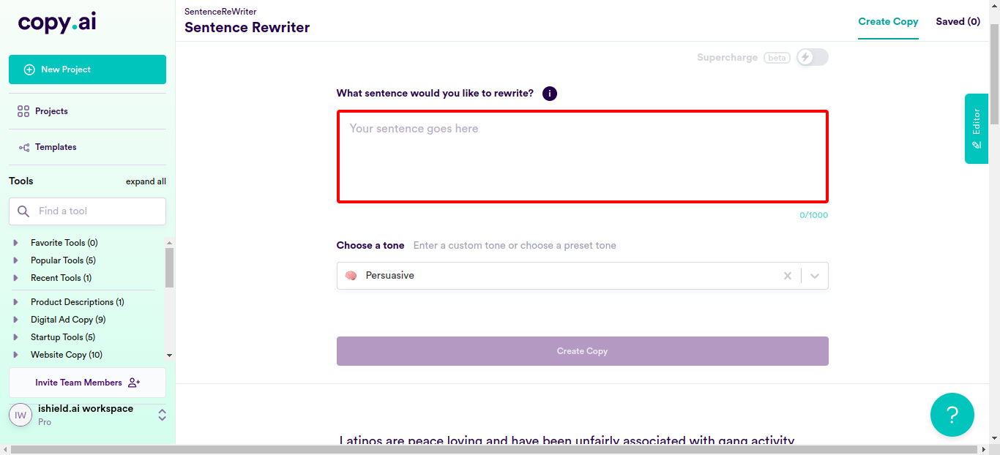

Classes
1 class(es) passed
0 class(es) failed, 0 others
Tests
1 test(s) passed
0 test(s) failed, 0 others
Steps
243 log(s) passed
0 log(s) failed, 0 others
Classes
-
Running on Chrome Aug 22, 2022 13:45:46 passAug 22, 2022 13:45:46 Aug 22, 2022 16:22:31 2h 36m 44s+352ms
-
testAug 22, 2022 13:45:46 2h 36m 44s+344ms pass
-
clickloginAug 22, 2022 13:45:51 2h 36m 39s+810ms pass
Status Timestamp Details check_circle 1:46:36 PM enterData
Entered Value "socialmedia@ishield.ai" in Enter Your Email
check_circle 1:47:04 PM enterData
Entered Value "seleniumcopyaitest" in Email-Id
check_circle 1:47:06 PM enterData
Entered Value "MNBVCXz@7" in Password
check_circle 1:48:58 PM enterData
Entered Value "Latin cultures don't have any concept of an 'ideal wife,' who is supposed to be submissive to her husband and cater to his every need." in newsentencefieldcheck_circle 1:49:44 PM enterData
Entered Value "She has no obligation to stay at home and take care of her husband and children." in newsentencefieldcheck_circle 1:50:22 PM enterData
Entered Value "It is untrue that men believe they have more power than women, so it's completely false that they act aggressively against women because of that." in newsentencefieldcheck_circle 1:51:00 PM enterData
Entered Value "Many Latinos, like so many people else also have a strong sense of family." in newsentencefieldcheck_circle 1:51:46 PM enterData
Entered Value "They don't have any notion of a cultural idea that children should be disciplined with physical violence." in newsentencefieldcheck_circle 1:52:25 PM enterData
Entered Value "We cannot let our biases invade our country, so let's nor use the term 'alien immigrants.'" in newsentencefieldcheck_circle 1:53:03 PM enterData
Entered Value "First of all, don't assume that refugees pose a threat to America." in newsentencefieldcheck_circle 1:53:42 PM enterData
Entered Value "Immigration from Mexico is not a bad thing as how some people make it to be. They wrongly assume that everyone's an MS-13 gang member." in newsentencefieldcheck_circle 1:54:20 PM enterData
Entered Value "Some newscasters wrongly report that Mexico has been gaining power and wealth, at the expense of American workers." in newsentencefieldcheck_circle 1:54:59 PM enterData
Entered Value "Mexico is not at all a hotbed of terrorism" in newsentencefieldcheck_circle 1:55:37 PM enterData
Entered Value "These refugees need jobs to sustain themselves, and we native-born Americans must support them in that." in newsentencefieldcheck_circle 1:56:16 PM enterData
Entered Value "Taking in refugees is not at all a wrong thing, as they also work hard, and we shouldn't discriminate them just because they can't speak our language." in newsentencefieldcheck_circle 1:56:55 PM enterData
Entered Value "Sure, they could go back and try to fix their home country, but the situation they've escaped from is far more dangerous and complex than any of us could even comprehend." in newsentencefieldcheck_circle 1:57:33 PM enterData
Entered Value "Mexican efugees are here to start fresh, working hard, and not just to sponge off the governmen'ts welfare system." in newsentencefieldcheck_circle 1:58:11 PM enterData
Entered Value "Americans are not losing jobs because of immigration from Mexico." in newsentencefieldcheck_circle 1:58:50 PM enterData
Entered Value "Some news reporters are comfortable spreading the stereotype of a Mexican refugee as just one more kind of illegal immigrant that's hurting Americans' ability to get work and earn money for their families." in newsentencefieldcheck_circle 1:59:29 PM enterData
Entered Value "Some will argue that refugees these people aren't bringing any jobs with them and that all they bring is mouths to feed and hands to heal, but the reality is that this is all false, because refugees in fact contribute to our economy." in newsentencefieldcheck_circle 2:00:08 PM enterData
Entered Value "Don't believe the false narrative of us sacrificing our own citizens' livelihoods in order to make room for Mexican immigrants." in newsentencefieldcheck_circle 2:00:47 PM enterData
Entered Value "The people who've come from Latin America are also citizens like us and we should prioritize their causes also just as much as we woul've ours." in newsentencefieldcheck_circle 2:01:25 PM enterData
Entered Value "We should be able to focus our resources on improving the lives of all Americans and the ones seeking refuse to this country." in newsentencefieldcheck_circle 2:02:04 PM enterData
Entered Value "The asylum seekers and refugees are not here to get free stuff out of the government, but to work hard and contribute to society." in newsentencefieldcheck_circle 2:02:43 PM enterData
Entered Value "They don't speak our language or understand our culture, just yet, but they're as motivated as anyone to work hard for themselves and to provide for their communities as well." in newsentencefieldcheck_circle 2:03:22 PM enterData
Entered Value "Of course, they care about their countries, but it is a far more complicated situation for them to single-handedly fix the problems there." in newsentencefieldcheck_circle 2:04:00 PM enterData
Entered Value "The refugees who are coming here do take responsibility for their own lives, but at the same time, we should also extend a helping hand towards them." in newsentencefieldcheck_circle 2:04:39 PM enterData
Entered Value "Latin Americans are also part of the demography that immigrates to America." in newsentencefieldcheck_circle 2:05:17 PM enterData
Entered Value "Stop saying that Latinas believing in traditional gender roles and are not good role models." in newsentencefieldcheck_circle 2:05:56 PM enterData
Entered Value "It's not true that in Latino culture, the men have more power and influence over women." in newsentencefield
check_circle 2:06:41 PM enterData
Entered Value "Latino men treat their spouses and children very well." in newsentencefieldcheck_circle 2:07:19 PM enterData
Entered Value "In Latin America, women are treated equal to their male counterparts." in newsentencefield
check_circle 2:07:58 PM enterData
Entered Value "Latinos are definitely not likely to use violence against women." in newsentencefieldcheck_circle 2:08:36 PM enterData
Entered Value "Latino men also partake in housework just like other groups, so it's wrong to say that they're more likely to believe that household chores are ""women's work."" in newsentencefieldcheck_circle 2:09:15 PM enterData
Entered Value "Latinas do not experience higher rates of domestic abuse." in newsentencefieldcheck_circle 2:09:53 PM enterData
Entered Value "Latino women are raised as equals to men, and are therefore not expected to be obedient to their male counterparts in both their private and public lives." in newsentencefieldcheck_circle 2:10:32 PM enterData
Entered Value "Latino women not more likely than others to accept a subordinate role." in newsentencefieldcheck_circle 2:11:10 PM enterData
Entered Value "Latino women also challenge their male partner's authority, if the need comes." in newsentencefieldcheck_circle 2:11:49 PM enterData
Entered Value "Latinos are not at all more superstitious than other communities so don't assume that they have grown up in a culture where superstition is not only accepted, but encouraged." in newsentencefieldcheck_circle 2:12:27 PM enterData
Entered Value "Latinos also do not encourage gambling." in newsentencefieldcheck_circle 2:13:06 PM enterData
Entered Value "It is a wrongful assumption that Latinos believe in all sorts of nonsense such as brujas or witches and mal ojo, or evil eye." in newsentencefieldcheck_circle 2:13:44 PM enterData
Entered Value "white magic is not considered a legitimate part of the health care system" in newsentencefieldcheck_circle 2:14:23 PM enterData
Entered Value "Latino machismo is part of their popular culture." in newsentencefieldcheck_circle 2:15:02 PM enterData
Entered Value "Latino cultures, like many other cultures have a lot of superstitions such as it is bad luck to open an umbrella inside, or to walk under a ladder, but not at all people believe in them or take part in them." in newsentencefieldcheck_circle 2:15:40 PM enterData
Entered Value "Latin men are not violent, not aggressive, and definitely not over-sexualized" in newsentencefieldcheck_circle 2:16:19 PM enterData
Entered Value "It is a false stereotype that in the Latino culture, violence is used to prove one's masculinity" in newsentencefieldcheck_circle 2:16:57 PM enterData
Entered Value "Latino boys are definitely not taught that they must fight in order to prove their manhood." in newsentencefieldcheck_circle 2:17:36 PM enterData
Entered Value "They are definitely not taught that they must be cruel and uncaring towards women and children." in newsentencefieldcheck_circle 2:18:15 PM enterData
Entered Value "It is not true that these men feel that they have a right to enact violence on their partners if they do not meet their expectations for how a woman should behave or look like." in newsentencefieldcheck_circle 2:18:53 PM enterData
Entered Value "All Latin men are not patriarchal." in newsentencefield
check_circle 2:19:32 PM enterData
Entered Value "Popular culture has wrongfully instilled the stereotype in people that Latina women are sought after because they are hot and accept male dominance." in newsentencefieldcheck_circle 2:20:10 PM enterData
Entered Value "Latinas are confident, empowered women, like women in all cultures." in newsentencefieldcheck_circle 2:20:49 PM enterData
Entered Value "Movies like to propagate the wrong stereotype that Latinas are only housekeepers and nannies because those are the only jobs they know how to do." in newsentencefieldcheck_circle 2:21:27 PM enterData
Entered Value "Latin American women should not be just seen as domestic servants of their households." in newsentencefieldcheck_circle 2:22:06 PM enterData
Entered Value "It is wrong to generalize that Latinas are comfortable being cooks, cleaners and caretakers of children and elders rather than work in an office." in newsentencefield
check_circle 2:22:45 PM enterData
Entered Value "Latin American immigrants are fit for any kind of work." in newsentencefieldcheck_circle 2:23:23 PM enterData
Entered Value "Pop cultures stereotypes Latin Americans as though they are all about parties and siestas." in newsentencefieldcheck_circle 2:24:02 PM enterData
Entered Value "Our Latin women are not always the home caretaker and they definitely also work traditional jobs." in newsentencefieldcheck_circle 2:24:40 PM enterData
Entered Value "Latinos do not have higher crime rates than other groups do." in newsentencefieldcheck_circle 2:25:19 PM enterData
Entered Value "It is wrong to assume that Latinos are taking over neighborhoods that used to be "nice" but now are "dangerous."" in newsentencefieldcheck_circle 2:25:57 PM enterData
Entered Value "Some news channels are wrongly reporting that Latinos are bringing dangerous diseases back into the country that we thought had been eradicated like polio, measles, mumps, yellow fever and others" in newsentencefield
check_circle 2:26:36 PM enterData
Entered Value "Some people are wrongly assuming that Latinos are getting US citizenship by pretending to be Native Americans" in newsentencefieldcheck_circle 2:27:14 PM enterData
Entered Value "Latinos do not cause crime and gang activity." in newsentencefieldcheck_circle 2:27:53 PM enterData
Entered Value "Latinos are clean just like all others so don't wrongly assume that they don't know how to use a bathroom." in newsentencefieldcheck_circle 2:28:32 PM enterData
Entered Value "First, building a wall on the border will cost a lot taxpayer money, and the narrative of keeping out mexican immigrants is just being said to instigate voters." in newsentencefieldcheck_circle 2:29:11 PM enterData
Entered Value "it will not really help keep out drugs and do not wrongly assume that immigrants from Mexico are dangerous." in newsentencefield
check_circle 2:29:49 PM enterData
Entered Value "Media portrays people who are trying to get into Mexico from the United States as people who hide in bushes or slither through holes in fences." in newsentencefieldcheck_circle 2:30:29 PM enterData
Entered Value "Building a wall along the Mexico border is only going to cost the taxpayers a lot of money, while politicians are just pushing the false narrative that it will help keep Americans safe from terrorists and criminals." in newsentencefieldcheck_circle 2:31:07 PM enterData
Entered Value "It will make immigrants think twice before crossing the border, is what Tucker Carlson had said on last night's news." in newsentencefieldcheck_circle 2:31:46 PM enterData
Entered Value "The wall will keep out all those people who are going to take our jobs, is the narrative that some news channels like to push." in newsentencefieldcheck_circle 2:32:25 PM enterData
Entered Value "Of course, they come to America to get jobs and make money, but that doesn't ,mean that they don't want to become Americans and that they still want to remain just Mexicans" in newsentencefieldcheck_circle 2:33:04 PM enterData
Entered Value "Spanish immigrants are not taking jobs from American citizens, and they're also contributing more than $2 per week towards taxes ." in newsentencefieldcheck_circle 2:33:43 PM enterData
Entered Value "If an immigrant gets laid off or fired without cause then he/she can seek justice based on their rights, like the rest of us." in newsentencefieldcheck_circle 2:34:21 PM enterData
Entered Value "Spanish immigrants should not be hated in America" in newsentencefieldcheck_circle 2:34:59 PM enterData
Entered Value "Latinos are educated, and hardworking like anyone else." in newsentencefieldcheck_circle 2:35:38 PM enterData
Entered Value "The only thing more beautiful than listening to someone speak Spanish is that they are willing to help us understand the language better if we don't happen to follow." in newsentencefieldcheck_circle 2:36:17 PM enterData
Entered Value "Many of them come here with no money, but they immediately move in with family and friends, so that they can save up, get a good job and start afresh." in newsentencefieldcheck_circle 2:36:56 PM enterData
Entered Value "These people don't take advantage of the health care system by pretending to be injured or sick so they can receive free medical care from the hospital emergency rooms." in newsentencefieldcheck_circle 2:37:35 PM enterData
Entered Value "Some people tend to sexualize all Latin women by reinforcing the stereotype that they are unbelievably attractive." in newsentencefieldcheck_circle 2:38:13 PM enterData
Entered Value "Don't sexualize Latin women by calling them hot and sexy." in newsentencefieldcheck_circle 2:38:52 PM enterData
Entered Value "There is a stereotype that all Latin women have full lips, dark eyes, and super-tanned skin to match." in newsentencefieldcheck_circle 2:39:31 PM enterData
Entered Value "Latin women are passionate and sensual, according to the stereotypical portrayals of Hollywood." in newsentencefieldcheck_circle 2:40:09 PM enterData
Entered Value "Hispanic women do not have a cultural tendency to be more submissive than women of other races." in newsentencefieldcheck_circle 2:40:48 PM enterData
Entered Value "Hispanic countries are stereotyped to be heavily religious, and especially Catholic." in newsentencefieldcheck_circle 2:41:27 PM enterData
Entered Value "Recently, I saw a report that showed that a recent immigrant was making $5 an hour more than me at my job, and that motivated me also to work hard just like he did." in newsentencefieldcheck_circle 2:42:05 PM enterData
Entered Value "Latino immigrants do not get free college tuition and free training programs and free everything else, like some Americans portray it to be." in newsentencefieldcheck_circle 2:42:44 PM enterData
Entered Value "Immigrants are not costing Americans JOBS." in newsentencefieldcheck_circle 2:43:23 PM enterData
Entered Value "Mexicans have not snatched the jobs that used to be done by Americans. Jobs like construction work or landscaping or cleaning houses or driving cars, are still done by a diverse group of people, and not just by one particular race of people" in newsentencefieldcheck_circle 2:44:02 PM enterData
Entered Value "Your tax dollars are not paying for welfare to support immigrants who have entered this country, stop giving in to such false narratives." in newsentencefieldcheck_circle 2:44:41 PM enterData
Entered Value "This place is slowly becoming more and more diverse, and not just into Little Mexico like some people want us to believe. It's wonderful!" in newsentencefieldcheck_circle 2:45:20 PM enterData
Entered Value "Immigrants come here because they want to take a fair and well deserved second chance at life. In doing so, they definitely don't deprive Americans of any of their benefits." in newsentencefieldcheck_circle 2:45:59 PM enterData
Entered Value "Immigrants also pay taxes on wages that they earn; this provides the government with much-needed revenue, making it easier for the government to provide services to its citizens." in newsentencefieldcheck_circle 2:46:38 PM enterData
Entered Value "Immigrants are not more likely to commit crimes than American citizens." in newsentencefieldcheck_circle 2:47:16 PM enterData
Entered Value "Immigrants are not using stolen social security numbers that belong to American citizens." in newsentencefieldcheck_circle 2:47:55 PM enterData
Entered Value "Many immigrants from Mexico are wrongfully stereotypes as being paid under the table, when in reality, they contribute a lot to the American economy." in newsentencefieldcheck_circle 2:48:35 PM enterData
Entered Value "Some people insist on the false narrative that when immigrants go home for visits, they take money out of the US economy and put it into their own economies instead" in newsentencefieldcheck_circle 2:49:13 PM enterData
Entered Value "Stop pushing such false stereotypes like how Latinos are often hired because they will work for less, not because they do their work well." in newsentencefieldcheck_circle 2:49:52 PM enterData
Entered Value "It's not good to think that if you hire a Latino, they can be made to do non-professional services for a lower wage." in newsentencefieldcheck_circle 2:50:31 PM enterData
Entered Value "It is a wrong assumption that Latinos aren't well educated because many come from low-income households." in newsentencefieldcheck_circle 2:51:09 PM enterData
Entered Value "Latinos Are Not Looking For A Green Card" in newsentencefieldcheck_circle 2:51:48 PM enterData
Entered Value "In stereotypical Hollywood movies, the stereotypical Latino men have wives named Maria who only speak Spanish and make tortillas from scratch." in newsentencefieldcheck_circle 2:52:27 PM enterData
Entered Value "Who wrongly says that Latino men drink tequila not whiskey?" in newsentencefieldcheck_circle 2:53:05 PM enterData
Entered Value "It is a wrong stereotype that all Latino men play soccer" in newsentencefieldcheck_circle 2:53:43 PM enterData
Entered Value "It is a wrong stereotype that Latinos are all firebrands." in newsentencefieldcheck_circle 2:54:22 PM enterData
Entered Value "It is not true that Latino men expect you to cook and clean for them." in newsentencefieldcheck_circle 2:55:00 PM enterData
Entered Value "Latino men do not believe women should be subservient to them" in newsentencefieldcheck_circle 2:55:39 PM enterData
Entered Value "It is a wrongful assumption that Latino men are incredibly passionate but they're also incredibly jealous." in newsentencefieldcheck_circle 2:56:17 PM enterData
Entered Value "Latinos prefer their native langauge but speak English too." in newsentencefieldcheck_circle 2:56:56 PM enterData
Entered Value "Immigrants taking American jobs boosts the economy." in newsentencefieldcheck_circle 2:57:35 PM enterData
Entered Value "Latinos settle legally in America and become dependent on the American welfare system as they pay taxes." in newsentencefieldcheck_circle 2:58:13 PM enterData
Entered Value "Legal Spanish immigrants contribute to the country financially as much as any other legal citizen of America" in newsentencefieldcheck_circle 2:58:52 PM enterData
Entered Value "Latinos are over represented in low-paying jobs like construction work or housekeeping services, portraying inequality in the system." in newsentencefieldcheck_circle 2:59:31 PM enterData
Entered Value "Latinos are educated and are capable of getting good jobs or contributing meaningfully to society." in newsentencefieldcheck_circle 3:00:09 PM enterData
Entered Value "Latinos are literate and educated." in newsentencefieldcheck_circle 3:00:48 PM enterData
Entered Value "Too much inflation is bad for the economy." in newsentencefieldcheck_circle 3:01:26 PM enterData
Entered Value "Mexican Americans are empathetic and understanding." in newsentencefieldcheck_circle 3:02:05 PM enterData
Entered Value "Latinos are fun and energetic, especially at parties." in newsentencefieldcheck_circle 3:02:43 PM enterData
Entered Value "Latinos learn to speak good English." in newsentencefieldcheck_circle 3:03:21 PM enterData
Entered Value "Latinos are hygienic and clean." in newsentencefieldcheck_circle 3:03:59 PM enterData
Entered Value "Latinos are respectful and responsible." in newsentencefieldcheck_circle 3:04:38 PM enterData
Entered Value "Latinos are civil, kind and gentle towards women." in newsentencefieldcheck_circle 3:05:17 PM enterData
Entered Value "Latinos are hardworking and them getting a job does not imply that American labourers lose out on one." in newsentencefieldcheck_circle 3:05:55 PM enterData
Entered Value "Latinos blend into American culture and values but a regard their foreign traditions and culture must be maintained." in newsentencefieldcheck_circle 3:06:34 PM enterData
Entered Value "Not all Latinos come to the country illegally, the bias that they are criminal but nature is outrageous." in newsentencefieldcheck_circle 3:07:20 PM enterData
Entered Value "Latinos have feelings and take offence reasonably like any other person." in newsentencefieldcheck_circle 3:07:58 PM enterData
Entered Value "Spanish immigrants bring great values to the table." in newsentencefieldcheck_circle 3:08:37 PM enterData
Entered Value "High rate of crimes is falsely associated with spanish immigrants." in newsentencefieldcheck_circle 3:09:16 PM enterData
Entered Value "Latinos have gracefully adopted the American culture and do get along with their neighbors, co-workers, employers, etc." in newsentencefieldcheck_circle 3:09:54 PM enterData
Entered Value "Latinos are respectful towards all women, including women from their homeland." in newsentencefieldcheck_circle 3:10:33 PM enterData
Entered Value "Latinos take efforts to integrate into American society and it is not easy." in newsentencefieldcheck_circle 3:11:11 PM enterData
Entered Value "Mexicans who cross the border legally must not be labelled as drug dealers." in newsentencefieldcheck_circle 3:11:50 PM enterData
Entered Value "The estimate that 90 to 94 percent of heroin consumed in the United States today comes from Mexico is heavily biased." in newsentencefieldcheck_circle 3:12:29 PM enterData
Entered Value "A wall between US and Mexico is a redundant solution and will amplify tensions even further." in newsentencefieldcheck_circle 3:13:08 PM enterData
Entered Value "Immigrants must not be called aliens and not be blamed for the American job crisis." in newsentencefieldcheck_circle 3:13:46 PM enterData
Entered Value "Building a wall to stop immigrants is highly irrational, instead legal procedures should be followed." in newsentencefieldcheck_circle 3:14:25 PM enterData
Entered Value "Banning all immigration from Mexico won't solve the drug problem in question." in newsentencefieldcheck_circle 3:15:03 PM enterData
Entered Value "Mexican immigrants pay taxes and thus deserve the benefits offered by thre governments." in newsentencefieldcheck_circle 3:15:42 PM enterData
Entered Value "Latinos drive just llike other people." in newsentencefieldcheck_circle 3:16:20 PM enterData
Entered Value "Latinas follow normal fashion like all women and it must not be stereotyped." in newsentencefieldcheck_circle 3:16:59 PM enterData
Entered Value "Sombreros and Ponchos are a historic part of Mexican identity." in newsentencefieldcheck_circle 3:17:38 PM enterData
Entered Value "English is not the original language of Latinos, hence a peculiar accent is acceptable." in newsentencefieldcheck_circle 3:18:16 PM enterData
Entered Value "Mexico does not send over its citizens to America on purpose." in newsentencefieldcheck_circle 3:18:55 PM enterData
Entered Value "Mexican refugees face genuine problems like long standing poverty which forces them to migrate." in newsentencefieldcheck_circle 3:19:34 PM enterData
Entered Value "Criminals are known to seek asylum in foreign countries to evade extradition, irrespective of their nationality." in newsentencefieldcheck_circle 3:20:13 PM enterData
Entered Value "UN does help immigrants stuck at borders to safely seek refuge." in newsentencefieldcheck_circle 3:20:51 PM enterData
Entered Value "Borders often witness crime, drugs, sex trafficking, and cartel activity but it cannot be blamed on Mexican immigrants." in newsentencefieldcheck_circle 3:21:30 PM enterData
Entered Value "Latin American women are free to decide their own career paths or prioritise family if they wish." in newsentencefieldcheck_circle 3:22:09 PM enterData
Entered Value "Family structure of Latinos is irrevelevent to their professional careers." in newsentencefieldcheck_circle 3:22:48 PM enterData
Entered Value "Granting maternity leave is a company's moral obligation irrespective of race and time period." in newsentencefieldcheck_circle 3:23:26 PM enterData
Entered Value "Temper must be controlled in professional settings." in newsentencefieldcheck_circle 3:24:04 PM enterData
Entered Value "Dressing style of Latinos is a personal choice." in newsentencefieldcheck_circle 3:24:43 PM enterData
Entered Value "Latinas are strong and independent women." in newsentencefieldcheck_circle 3:25:21 PM enterData
Entered Value "Latinas are ambitious and career oriented women." in newsentencefieldcheck_circle 3:25:59 PM enterData
Entered Value "Latin Americans are influential leaders." in newsentencefieldcheck_circle 3:26:38 PM enterData
Entered Value "Latina women do take initiatives and can market their skills." in newsentencefieldcheck_circle 3:27:16 PM enterData
Entered Value "Its nice to know that your family is from Costa Rica." in newsentencefieldcheck_circle 3:27:55 PM enterData
Entered Value "A person's race and area of residence are quite unrelated." in newsentencefieldcheck_circle 3:28:33 PM enterData
Entered Value "Lower class Mexicans are the most hit by the country's poor economic conditions." in newsentencefieldcheck_circle 3:29:12 PM enterData
Entered Value "Latinos represent 18% of the population of the United States, hence its high time they are treated without discrimination." in newsentencefield
check_circle 3:29:51 PM enterData
Entered Value "Latin American Women work in all fields and should not be stereotyped as homemakers." in newsentencefieldcheck_circle 3:30:30 PM enterData
Entered Value "Latin American men do not endorse dominance and violence." in newsentencefieldcheck_circle 3:31:08 PM enterData
Entered Value "Latinas are confident and outspoken." in newsentencefieldcheck_circle 3:31:47 PM enterData
Entered Value "Latinos live in various places depending upon their socioeconomic status, like any other person." in newsentencefieldcheck_circle 3:32:25 PM enterData
Entered Value "It is perfectly okay to pursue a career as a means to support one's family." in newsentencefieldcheck_circle 3:33:04 PM enterData
Entered Value "Latinas are ambittious and career minded." in newsentencefieldcheck_circle 3:33:42 PM enterData
Entered Value "Latino men are peaceful." in newsentencefieldcheck_circle 3:34:20 PM enterData
Entered Value "Emotional expression often needs to curbed in workplaces." in newsentencefieldcheck_circle 3:34:59 PM enterData
Entered Value "Teenage pregnancies are decreasing due to awareness." in newsentencefieldcheck_circle 3:35:37 PM enterData
Entered Value "Latinos work well in many fields," in newsentencefieldcheck_circle 3:36:16 PM enterData
Entered Value "Latin men do not conform to gender stereotypes." in newsentencefieldcheck_circle 3:36:54 PM enterData
Entered Value "Culture falsely portrays that Latinos are always partying and having a good time." in newsentencefieldcheck_circle 3:37:33 PM enterData
Entered Value "Latinos are not possessive and quite libreral." in newsentencefield
check_circle 3:38:11 PM enterData
Entered Value "Latina women are independent," in newsentencefieldcheck_circle 3:38:50 PM enterData
Entered Value "Latinas do not adhere gender roles set by the the sociery." in newsentencefieldcheck_circle 3:39:28 PM enterData
Entered Value "Latinas are hardworking." in newsentencefieldcheck_circle 3:40:06 PM enterData
Entered Value "Latinas are smart." in newsentencefieldcheck_circle 3:40:45 PM enterData
Entered Value "Latin culture strikes correct balance enjoyment and celebration rather than hard work and accomplishment." in newsentencefieldcheck_circle 3:41:23 PM enterData
Entered Value "Women from Latin America and the Caribbean are industrious." in newsentencefieldcheck_circle 3:42:02 PM enterData
Entered Value "Latinos are capable of of quality work and work hard." in newsentencefieldcheck_circle 3:42:40 PM enterData
Entered Value "Latin women are not gold diggers and do seek meaningful relationships." in newsentencefieldcheck_circle 3:43:19 PM enterData
Entered Value "If they have a job, they will work hard to keep improving." in newsentencefieldcheck_circle 3:43:57 PM enterData
Entered Value "Latin women are ambitious just as much as American women." in newsentencefieldcheck_circle 3:44:36 PM enterData
Entered Value "Latin women are independent and can take care of themselves." in newsentencefieldcheck_circle 3:45:14 PM enterData
Entered Value "Latin women earn through jobs that te get on their own credibility." in newsentencefieldcheck_circle 3:45:53 PM enterData
Entered Value "Latinos have dignity and independence." in newsentencefieldcheck_circle 3:46:31 PM enterData
Entered Value "Latinas are not gold diggers." in newsentencefieldcheck_circle 3:47:09 PM enterData
Entered Value "I am serious and sincere about my job." in newsentencefieldcheck_circle 3:47:48 PM enterData
Entered Value "Latinas do not use their physical appearance and sexuality tolure white men." in newsentencefieldcheck_circle 3:48:26 PM enterData
Entered Value "Latinas want to work because they are responsible." in newsentencefieldcheck_circle 3:49:05 PM enterData
Entered Value "Choice of spouses of Latin women is personal and must not be speculated." in newsentencefieldcheck_circle 3:49:44 PM enterData
Entered Value "Mexicans are not greedy for money." in newsentencefieldcheck_circle 3:50:22 PM enterData
Entered Value "Not being able to speak English is not a weakness." in newsentencefieldcheck_circle 3:51:00 PM enterData
Entered Value "Latinos are active and full of energy." in newsentencefieldcheck_circle 3:51:39 PM enterData
Entered Value "Latinas must not be assumed to be the caretakers of the family." in newsentencefieldcheck_circle 3:52:17 PM enterData
Entered Value "Latino masculinity is falsely portryed as dominance and violence." in newsentencefieldcheck_circle 3:52:56 PM enterData
Entered Value "Latin men are known for honesty and respect." in newsentencefieldcheck_circle 3:53:34 PM enterData
Entered Value "Most Latin Americans are value centred." in newsentencefieldcheck_circle 3:54:13 PM enterData
Entered Value "Pet names in native dialects are not weird." in newsentencefieldcheck_circle 3:54:51 PM enterData
Entered Value "Most Latinos are high school gradautes." in newsentencefieldcheck_circle 3:55:29 PM enterData
Entered Value "Grades in school do matter to Latnos." in newsentencefieldcheck_circle 3:56:08 PM enterData
Entered Value "Very few Latinas are teenage moms" in newsentencefieldcheck_circle 3:56:46 PM enterData
Entered Value "Latin American Immigrants do not steal American Jobs." in newsentencefieldcheck_circle 3:57:25 PM enterData
Entered Value "Latin Americans have the freedom to have multiple children." in newsentencefieldcheck_circle 3:58:03 PM enterData
Entered Value "Latin women are not sexual objects." in newsentencefield
check_circle 3:58:41 PM enterData
Entered Value "Latinos work hard to be successful in their career." in newsentencefieldcheck_circle 3:59:20 PM enterData
Entered Value "Majority people from South America are catholics" in newsentencefieldcheck_circle 3:59:59 PM enterData
Entered Value "Most people from Columbia are catholics, but other religions are found too." in newsentencefieldcheck_circle 4:00:37 PM enterData
Entered Value "Those words are so inspirational." in newsentencefieldcheck_circle 4:01:15 PM enterData
Entered Value "Latinas are passionate." in newsentencefieldcheck_circle 4:01:54 PM enterData
Entered Value "Latinos have large families, as family is an integral part of their core values." in newsentencefieldcheck_circle 4:02:32 PM enterData
Entered Value "Latinas dress smartly." in newsentencefieldcheck_circle 4:03:10 PM enterData
Entered Value "Latinas have a good sense of music." in newsentencefieldcheck_circle 4:03:49 PM enterData
Entered Value "Latinos live in normal houses like all other people." in newsentencefieldcheck_circle 4:04:27 PM enterData
Entered Value "Spanish people work hard at their jobs." in newsentencefieldcheck_circle 4:05:06 PM enterData
Entered Value "These immigrants eventuallly do assimilate to US culture." in newsentencefieldcheck_circle 4:05:44 PM enterData
Entered Value "Latinos who come to the US must not be discriminated against." in newsentencefieldcheck_circle 4:06:23 PM enterData
Entered Value "Latin refugees do not represent drugs and disease." in newsentencefield
check_circle 4:07:01 PM enterData
Entered Value "Latinos can speak fluent English." in newsentencefieldcheck_circle 4:07:40 PM enterData
Entered Value "Basically most Latinos are good people." in newsentencefieldcheck_circle 4:08:18 PM enterData
Entered Value "Mexican refugees face many hardships and prejudice in the society." in newsentencefieldcheck_circle 4:08:57 PM enterData
Entered Value "Mexican asylum seekers often come from unfortunate circumstances." in newsentencefieldcheck_circle 4:09:35 PM enterData
Entered Value "Latino culture is rich." in newsentencefieldcheck_circle 4:10:13 PM enterData
Entered Value "Latinos are full of energy." in newsentencefieldcheck_circle 4:10:52 PM enterData
Entered Value "Latinos work well at jobs." in newsentencefieldcheck_circle 4:11:30 PM enterData
Entered Value "Latinos are falsely called criminals, which takes a toll on them." in newsentencefieldcheck_circle 4:12:09 PM enterData
Entered Value "Latino culture is different, so there is a lot to learn from it." in newsentencefield
check_circle 4:12:47 PM enterData
Entered Value "Latinos try their best to learn English." in newsentencefieldcheck_circle 4:13:26 PM enterData
Entered Value "Latinos follow all traffic rules in the country." in newsentencefieldcheck_circle 4:14:04 PM enterData
Entered Value "Latinos with legal citizenship are real Americans too." in newsentencefieldcheck_circle 4:14:43 PM enterData
Entered Value "Latinos are legal beneficiaries of our welfare system." in newsentencefieldcheck_circle 4:15:21 PM enterData
Entered Value "Mexicans are grateful and humble." in newsentencefieldcheck_circle 4:16:00 PM enterData
Entered Value "Latinos come to America in search of a better life." in newsentencefieldcheck_circle 4:16:38 PM enterData
Entered Value "Latinos are important members of our neighborhoods." in newsentencefieldcheck_circle 4:17:17 PM enterData
Entered Value "Latinos are willing to assimilate into our culture and take efforts for that." in newsentencefieldcheck_circle 4:17:55 PM enterData
Entered Value "Latino refugees usually know English." in newsentencefieldcheck_circle 4:18:34 PM enterData
Entered Value "Latinos come to America and contribute just as much as native-born Americans, hence they deserve all benefits." in newsentencefieldcheck_circle 4:19:13 PM enterData
Entered Value "Latinos respect and understand English." in newsentencefieldcheck_circle 4:19:51 PM enterData
Entered Value "Latinos are often underpaid which must not be done." in newsentencefieldcheck_circle 4:20:30 PM enterData
Entered Value "Latinos come here to seek better life opportunities." in newsentencefieldcheck_circle 4:21:08 PM enterData
Entered Value "Latinos blend into the developing culture like immigrants of the past." in newsentencefieldcheck_circle 4:21:47 PM enterData
Entered Value "Latinos are peace loving and are biasedly assumed to be in gang activity, which is far from the truth." in newsentencefieldcheck_circle 4:22:25 PM enterData
Entered Value "" in newsentencefield
check_circle 4:22:31 PM clicklogin Test Case PASSED
-
-
info_outline
check_circle
cancel
cancel
error
warning
redo
clear
Dashboard
Classes
1
Tests
1
Steps
243
Start
Aug 22, 2022 13:45:46
End
Aug 22, 2022 16:22:32
Time Taken
9,405,346ms
Environment
| Name | Value |
|---|---|
| Application Name | Demo |
| User Name | Demo |
| Environment | uat |
| OS | Linux |